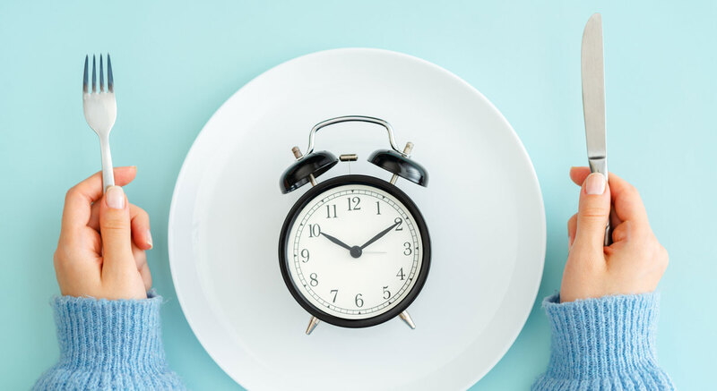

צום
צום לסירוגין, כאשר מבוצע בצורה מאוזנת, עשוי לתרום לשיפור הבריאות על ידי שיפור חילוף החומרים, איזון רמות הסוכר, וסיוע במניעת מחלות כרוניות.
צום, בפרט צום לסירוגין, הפך בשנים האחרונות לחלק מאורח חיים בריא עבור רבים, בזכות יתרונותיו האפשריים לבריאות הגוף. מדובר בגישה תזונתית המשלבת תקופות אכילה עם תקופות מוגדרות של צום, ובכך מאפשרת לגוף לנצל את מאגרי האנרגיה הפנימיים, לשפר את חילוף החומרים, ולתמוך בתהליכים של תיקון תאים. מחקרים מראים כי צום עשוי לתרום לשיפור רמות הסוכר בדם, לירידה במשקל, ולחיזוק מנגנוני ההגנה של הגוף מפני מחלות כרוניות כמו מחלות לב וסוכרת. עם זאת, יש להתאים את הצום לצרכים האישיים ולוודא שהוא מבוצע בצורה מאוזנת, תוך הקפדה על תזונה בריאה בזמן אכילה.